Head Back To The Homepage!

View My Taniti Project!

UX Researcher, UX Designer, UI Designer
12 weeks
Figma
The way people cook at home has changed dramatically. Between busy schedules, tighter grocery budgets,
and a growing desire to reduce food waste, home cooks need tools that work with them - not against them.
Recipe content online has exploded in recent years, yet the experience of actually finding and using a
recipe has gotten worse, not better. Endless scrolling, autoplay videos, and paragraphs of personal
narrative buried above every set of ingredients have turned a simple task into a frustrating one.
Meanwhile, AI-powered tools are reshaping how people interact with information. THere's a clear opportunity
to bring that same intelligence into the kitchen - not to replace the joy of cooking, but to remove the
friction that gets in the way of it.
Home cooks - whether busy parents squeezing in a weeknight dinner, budget-conscious shoppers trying to
stretch groceries, or food lovers who just want to cook without the noise - share a common frustration:
recipe websites are bloated. Finding the actual recipe requires scrolling past lengthy personal essays,
pop-up ads, and autoplay videos just to get to the ingredient list.
Beyond the content clutter, there's a discovery problem. Most recipe platforms require users to know
what they want to make before they search. But real life doesn't work that way. People open their fridge,
see what's left, and wonder what they can actuall make tonight. No major recipe platform answers that
question well.
CookSync was designed to solve both problems at once.
CookSync strips every recipe down to its essentials and puts an AI assistant front and center. On both
desktop and mobile, users are greeted with a clean search experience and a prompt to either browse recipes
or type in their available ingredients. The AI filter does the heavy lifting - parsing ingredients input,
matching it against recipes in the database, and surfacing results ranked by how many ingredients the user
already has.
Every recipe page follows the same uncluttered format: a hero image, key stats (time, servings, difficulty),
a clean ingredient list, and numbered steps. No backstory. No adsinterrupting the instructions. Just the recipe.
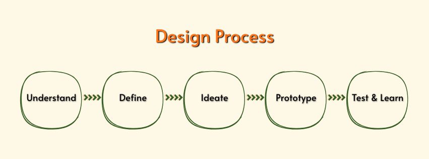
The research phase for CookSync didn't begin with a formal study - it began with seeing the potential in
AI & technology to help speed up the recipe research process by searching for ingredients that you have, not
ingredients that you'll need. It also began with a lived experience that turned out to be widely shared -
the frustration of scrolling past paragraphs of personal narrative, embedded ads, and autoplay videos
just to reach an ingredient list. This potential and frustration became the seed of this project.
This wasn't just personal. Watching others on social media flock to videos that show them how they could use their extra ingredients made it clear that an AI-powered recipe discovery tool could meet a real need and could make recipe discovery smarter and more intuitive overall. They would need to just stumble on a recipe they enjoy - they could seek one out. I also discovered that the problem of recipe content clutter was widely shared. There are social media videos that show DIY workarounds to get to the core content they are looking for, these videos have millions of views, and thousands of likes and comments, which shows that this is a problem that resonates with a wide audience. The fact that users are going out of their way to work around the experience - rather than through it - is a strong signal that the design of most recipe platforms is failing them.
At the center of this project is one primary pain point: too much irrelevant content between the user and the recipe. Every design decision in CookSync traces back to this. The fluff-free recipe format, the clean information heirarchy, the minimal visual chrome - all of it exists to close the gap between the user landing on a recipe and actually being able to use it.
This focus also shaped the AI ingredient matcher. The same user who is frustrated by clutter is also the user who opens the frideg, sees a handful of ingredients, and wants an answer fast. The matcher removes yet another layer pf friction - the need to already know what you want before you can find it.
With a clear sense of the problem space, the next step was defining exactly who CookSync was being designed for and what they truly needed. The insights gathered in the empathize phase pointed consistently toward one type of user: someone who loves cooking or wants to cook more, but finds that the tools available to them create more friction than they remove.
The core user need isn't a better recipe - it's a faster, cleaner path to one. That was how I created the persona, Jordan Mills. Jordan is a working parent who handles most of the cooking for the household. Between work, school pickups, and everything else on the to-do list, dinner has to come together fast. Opening a recipe site means commiting to a scroll. By the time Jordan gets past the author's summer vacation story amd the third pop-up ad, the motivation to cook something new has already faded. More often than not, it's back to the same five meals the family already knows.
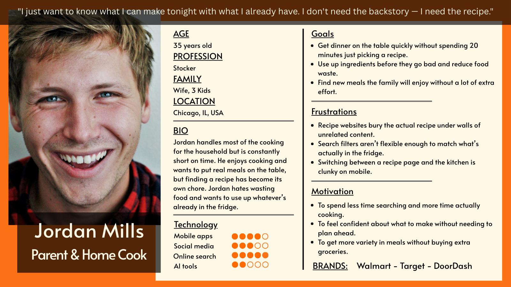
Home cooks need a way to quickly find and use recipes without wading through irrelevant content - because the current recipe browsing experience is cluttered, slow, and built around the author rather than the cook.
With a clear understanding of the user's needs, the ideation phase focused on translating those insights into a visual amd structural direction for CookSync. Rather than generating a large volume of divergent concepts, ideation here was purposeful and grounded - moving from inspiration to layout to interaction in a focused sequence.
The problem definition naturally led to a set of guiding questions that shaped every creative decision:
These questions becme a creative filter - any idea that didn't serve at least one of them was set aside.
Before touching a wireframe, a moodboard was built to establish the visual language of CookSync. The goal was to find a direction that felt warm and food-forward while remaining clean enough to support a distraction-free reading experience. Color palettes were explored with an emphasis on natural, kitchen-adjacent tones - creamy neutrals, warm earthy accents, muted greens. Layout references were pulled from editorial food publications and minimal web app designs, looking for the intersection between appetizing and functional.
This step was essential in making sure the final design would feel cohesive and intentional - not just usable, but inviting.
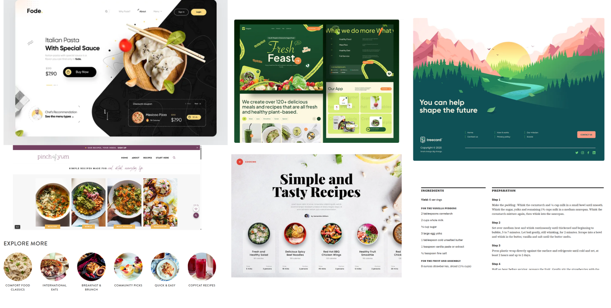
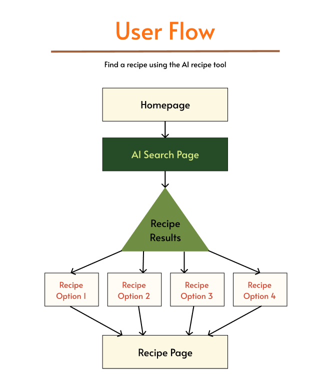
With the visual direction established, lo-fi wireframes were created in Figma to explore the structural layout of CookSync across both desktop and mobile. The wireframes focused on two core flows:
Key layout decisions were made at this stage - where the ingredient matcher would live, how recipe cards would display key information at a glance, and how the recipe detail page would be structured to lead the user straight to the content they need. Multiple iterations of the recipe page layout were explored before landing on a format that balanced visual warmth with fucntional simplicity.
This lo-fi stage was less about perfecting visuals and more about answering one question: does this structure actually solve Jordan's problem?
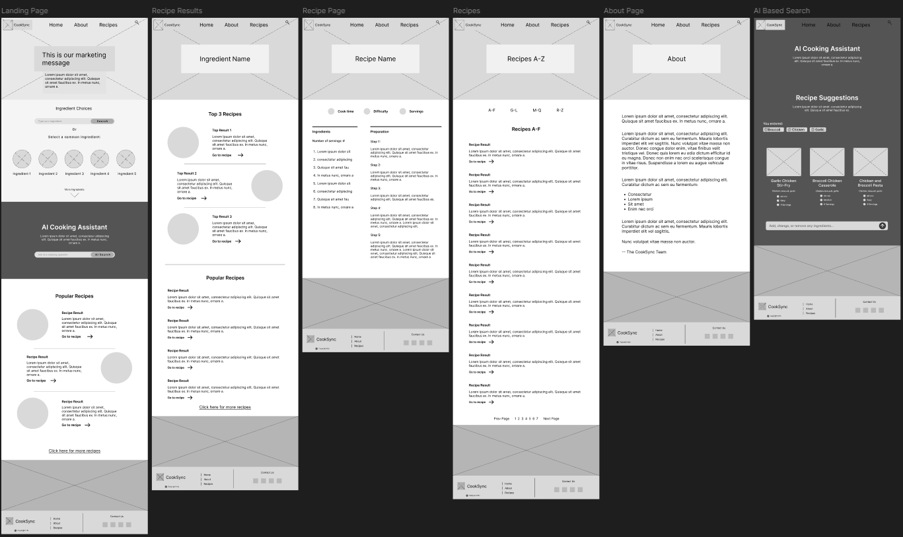
View Desktop Low Fidelity Prototype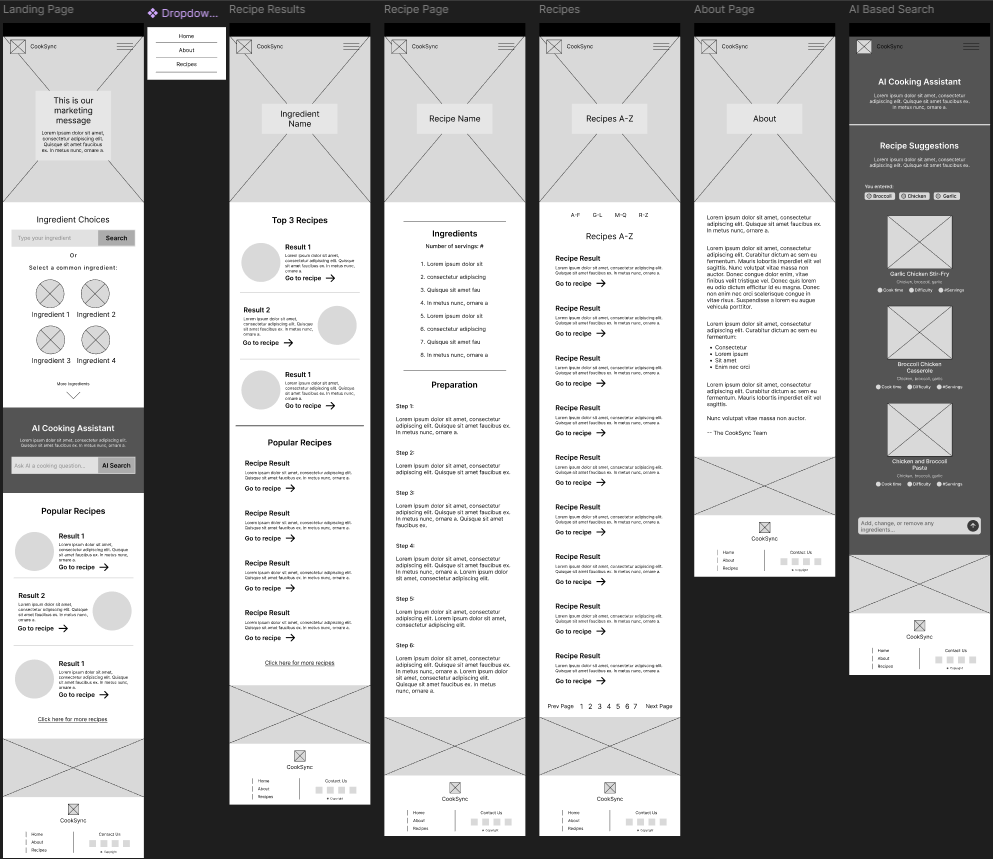
View Mobile Low Fidelity PrototypeThe font system for CookSync was chosen to balance personality with readability across both desktop and mobile. Three typefaces work together to create a layered, editorial feel:
Together the three fonts move from expressive to structured, mirroring the experience CookSync offers: inviting and personal at first glance, clean and functional when you need to actually cook.
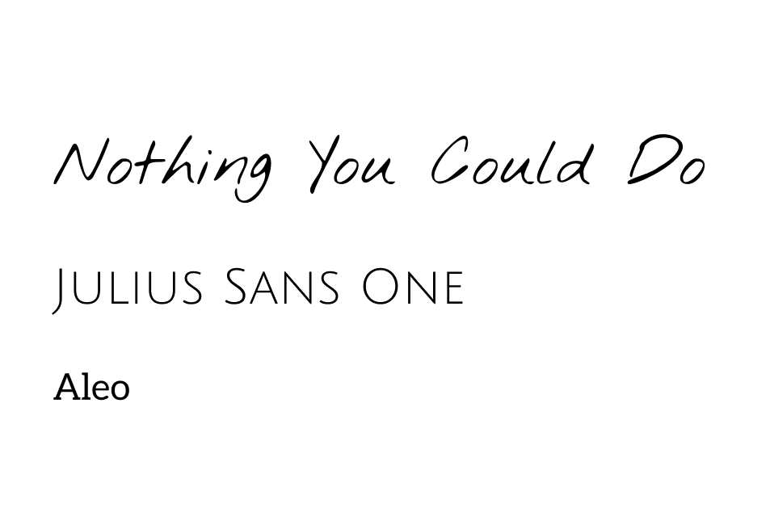
The CookSync palette was built around two ideas - the freshness of a kitchen garden and the warmth of a home-cooked meal. The deep greens anchor the brand with an organic natural energy, while the warm accents bring the heat and appetite appeal that food design demands. Cream and off-white backgrounds keep the reading experience soft and easy on the eyes.
Every color in the palette earns it's place. The greens build trust and freshness. The warm tones create hunger and excitement. The light backgrounds give the food photography room to breathe.
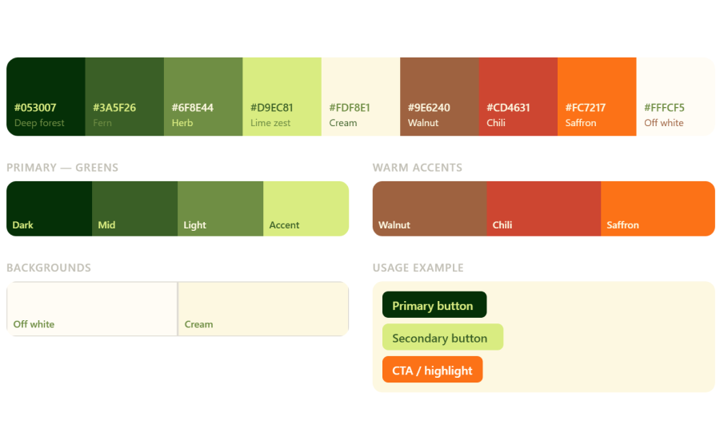
After establishing the visual language, user needs, and structural layout through moodboarding and lo-fi wireframing, the final designs brought everything together into a cohesive, fully realized product across both desktop and mobile.
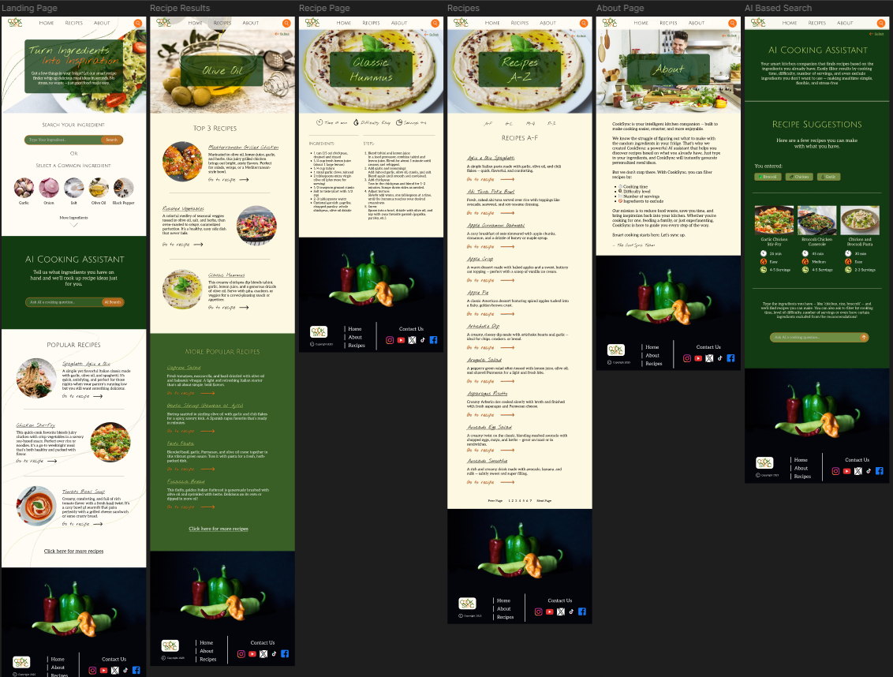
View Desktop Final Design Prototype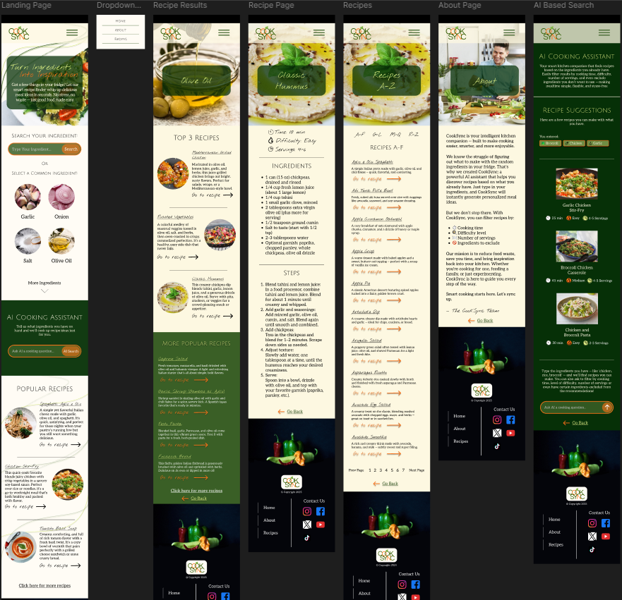
View Mobile Final Design PrototypeThe home page sets the tone for everything CookSync stands for. The hero section leads the brand's core promise - turning what's already in your fridge into something worth eating - paired with a full-bleed food photograph that does the emotional heavy lifting. Below the fold, users are introduced to a few discovery paths: the ingredient search bar for quick input, the common ingredient shortcuts for users who want a nudge in the right direction, and an AI search section if you have more than one ingredient in mind. Popular recipes round out the page, giving casual browsers something to land on without any friction.
On mobile the layout stacks naturally, keeping the ingredient search front and center and ensuring the most important action is always wihtin thumb's reach.
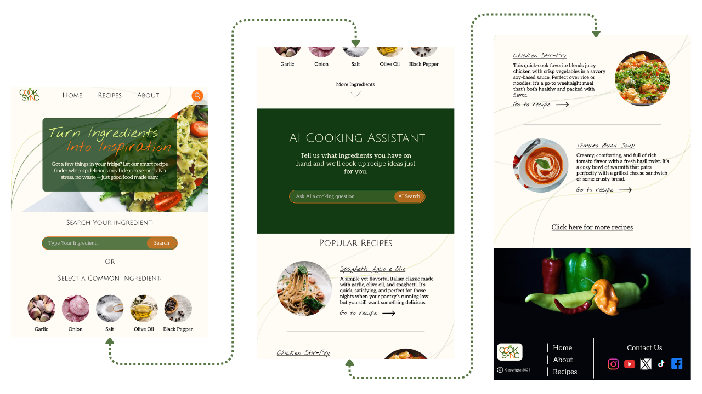
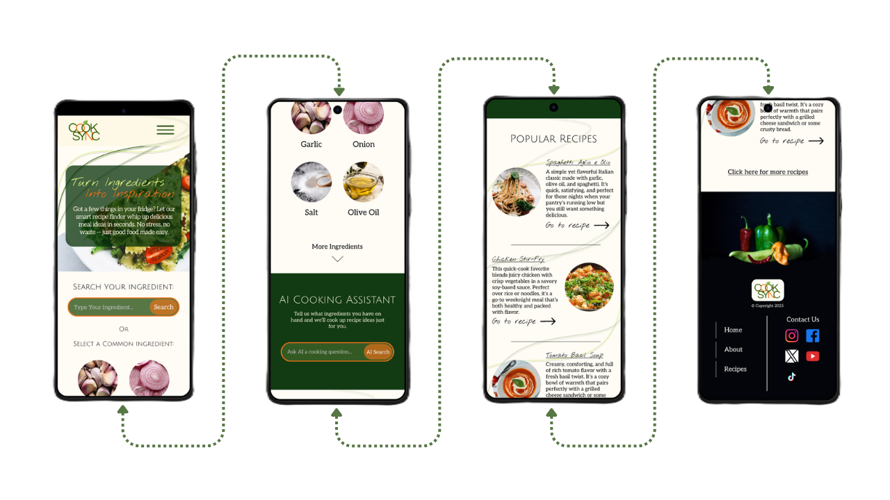
The AI cooking assistant page gives users a familiar AI setup, conversation and recipe results above and a way to continue the conversation down below. The AI cooking assistant can be accessed from an AI search section on the Home Page. Once you search for ingredients the AI will display which ingredients you entered, along with a list of recipes that match the ingredients you were searching for. The AI gives users a conversational entry point - letting them describe what they have or what they're in the mood for in a natural language, making the feature less like a filter and more like a knowledgable kitchen companion.
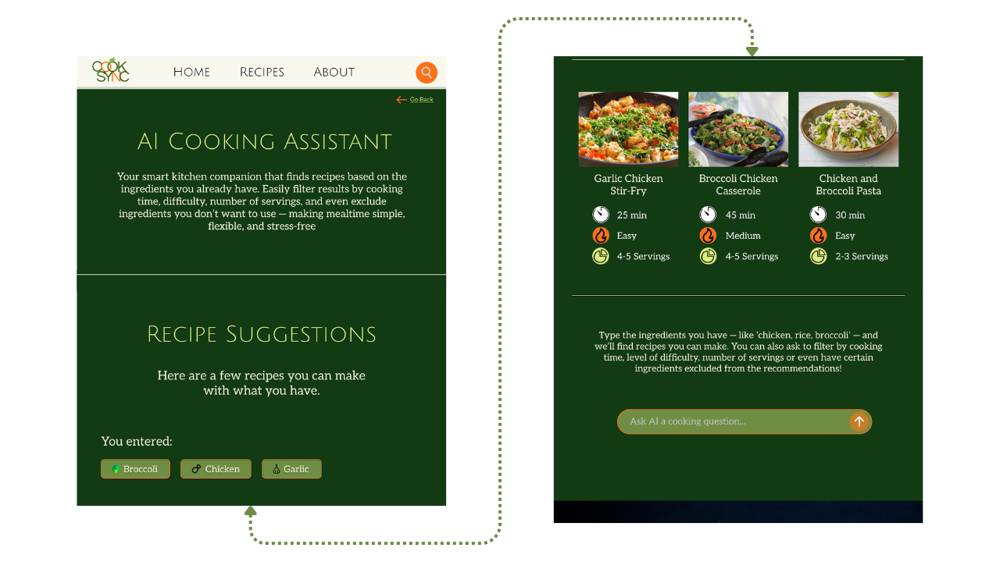
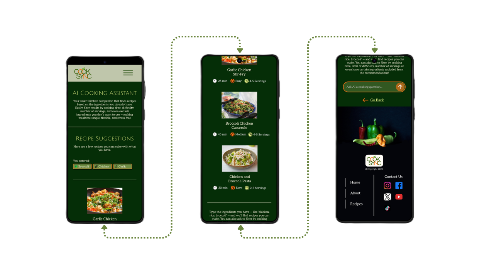
The recipe page is where CookSync's core promise is delivered. Every recipe follows the same strict structure: a large hero image - followed by a clean two-column layout separating ingredients from steps. No author biography. No embedded ads. No content competing for attention while someone is trying to cook.
On mobile the two-column layout collapses into a single scrollable flow, with generous tap targets and font sizes optimized for a user whose hands might be covered in flour.
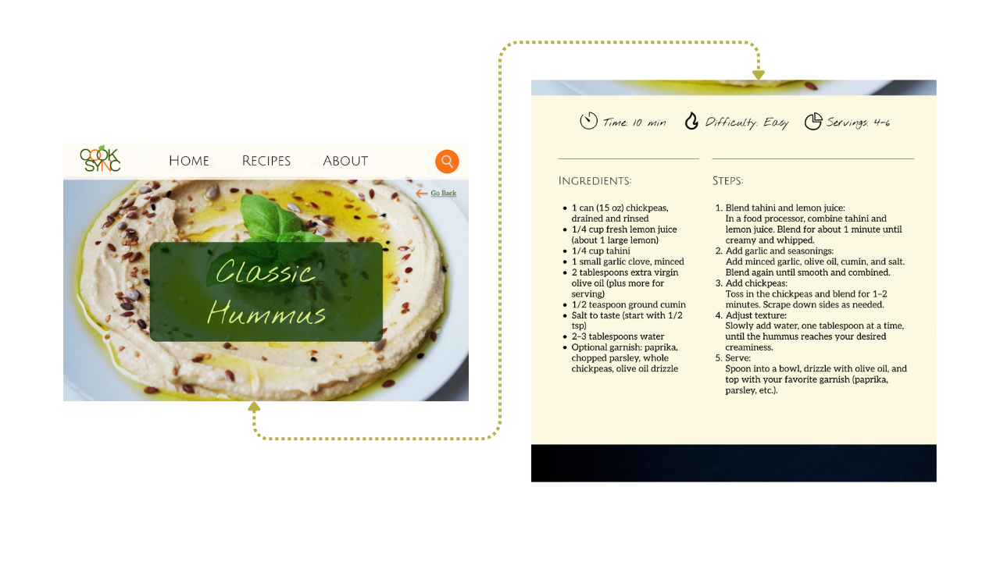
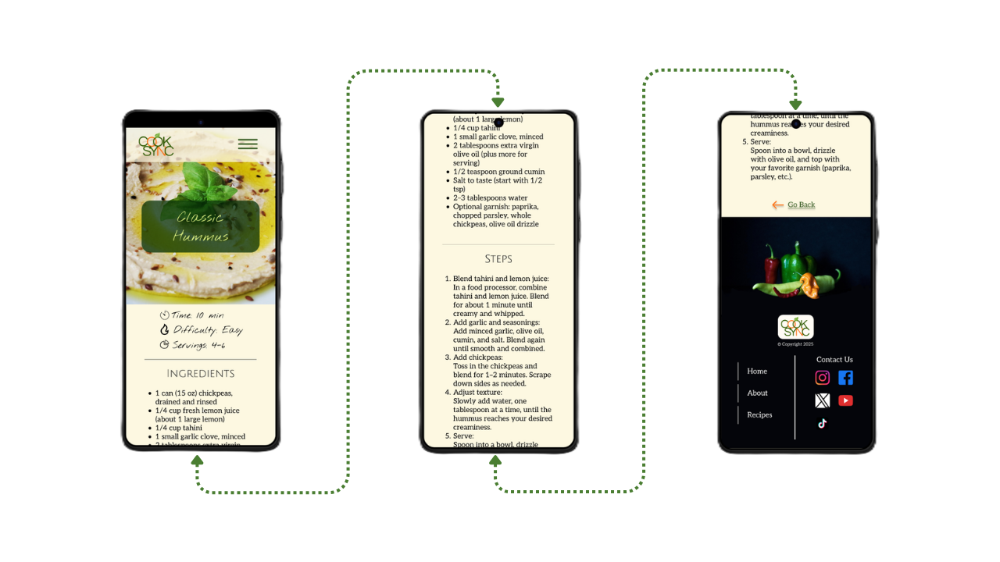
To validate the core user flows of CookSync, a guerrilla usability test was conducted using a Wizard of Oz Figma prototype across both desktop and mobile. Three participants were recruited to complete three tasks each, simulating real interactions with the AI ingredient matcher, the ingredient search, and the passive browsing experience.
Before testing began, participants were given the following disclaimer:
This is an early stage prototype - for the purpose of this test:
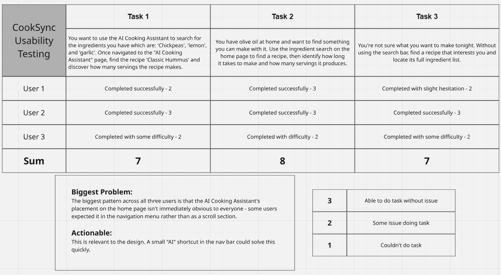
The AI Cooking Assistant's placement as a scroll section on the home page was not immediately discoverable for all users. Some expected it to be accessible directly from the navigation menu.
Actionable: Add an "AI" label or dedicated shortcut to the navigation bar so users can access the AI Cooking Assistant from any page without needing to scroll the home page to find it.
Overall the usability test confirmed that CookSync's core value proposition landed clearly with users - the clean recipe page and ingredient-based search were the most positively received aspects of the prototype. The friction points that emerged were minor and actionable, pointing to a navigation discoverability issue rather than any fundamental issues with the design concept. These findings directly informed refinements to the final prototype.
The revisions that I made were to the navigation menu at the top of each page and the footer menu at the bottom of each page. A pop-up box that stayed attached to the same place on the screen seemed like it could be an option but I did not want to feel as if the AI was being pushed onto users. I wanted to add an easy way to navigate to the AI Cooking Assistant but I did not want to make it to overbearing as not all users will be interested in using the AI feature.
That is why for the Desktop version I just simply added an 'AI' shortcut in both the top navigation and the footer navigation. And in the mobile version I added a shortcut in the dropdown hamburger menu and the footer.
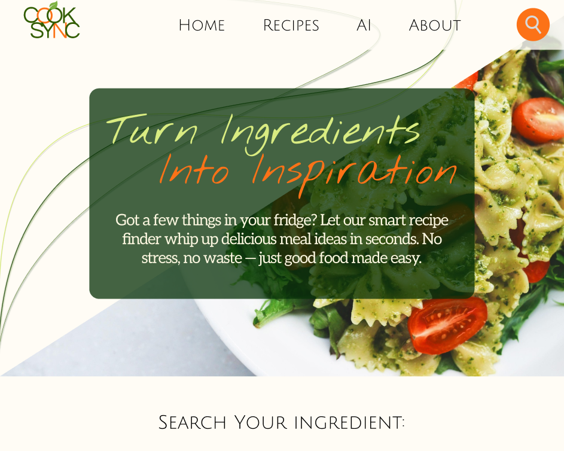
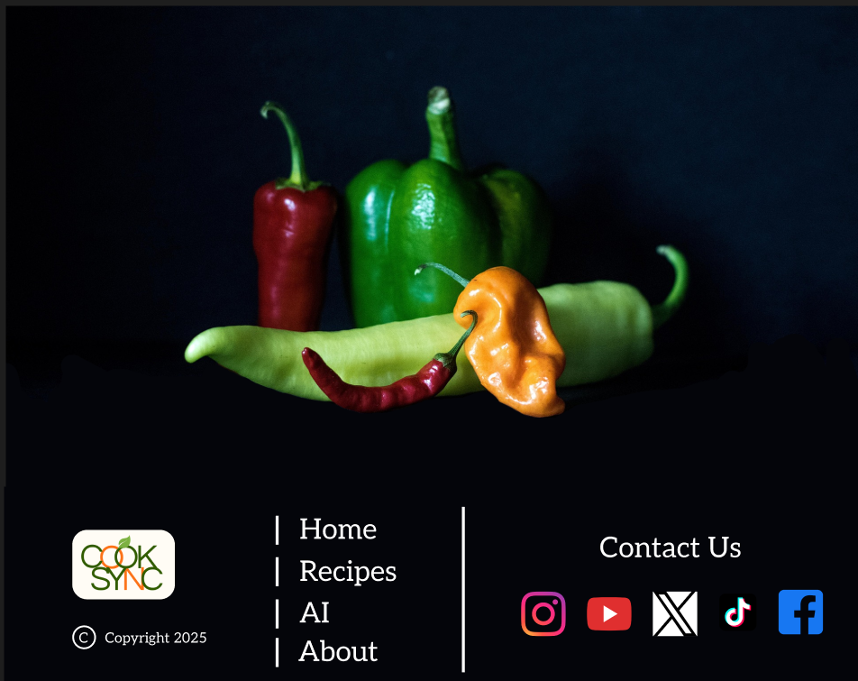
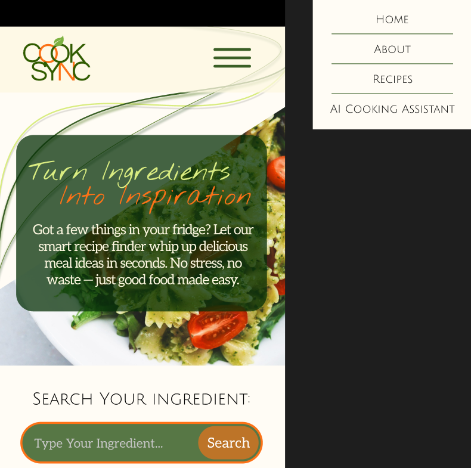
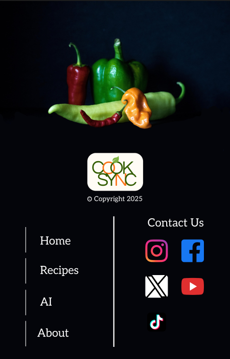
CookSync started from a simple but genuine frustration - that finding a recipe online had somehow become harder than it needed to be. What began as a personal observation turned into a design challenge that pushed me to think carefully about restraint, clarity, and the role AI can play in making everyday tasks feel effortless.
This project reinforced something that is easy to forget in visual design - that the best interface decisions are often about what you take away, not what you add. Every time I was tempted to include more information, more visual elements, or more features, the user's needs pulled me back to simplicity. CookSync is a better product for every element that didn't make it onto the page.
CookSync is a concept, but the problem it solves is real. For the home cook who just wants to know what they can make tonight without the noise - this is the product they've been scrolling past life stories to find.
I'm always open to new opportunities and collaborations. Feel free to reach out!